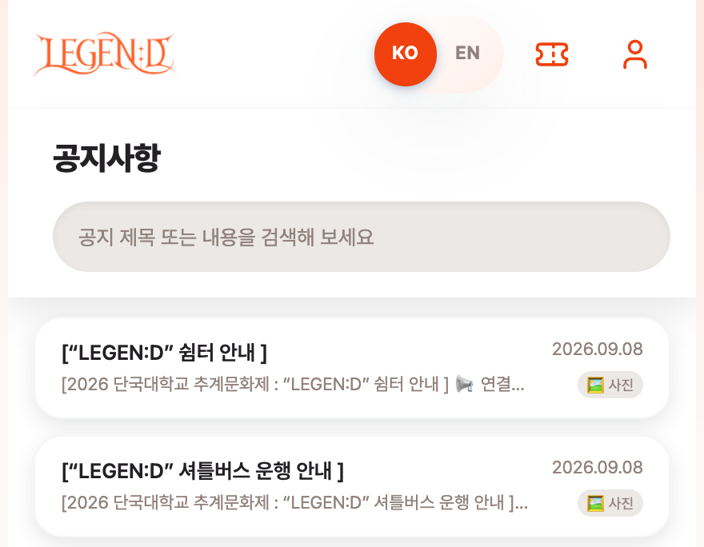
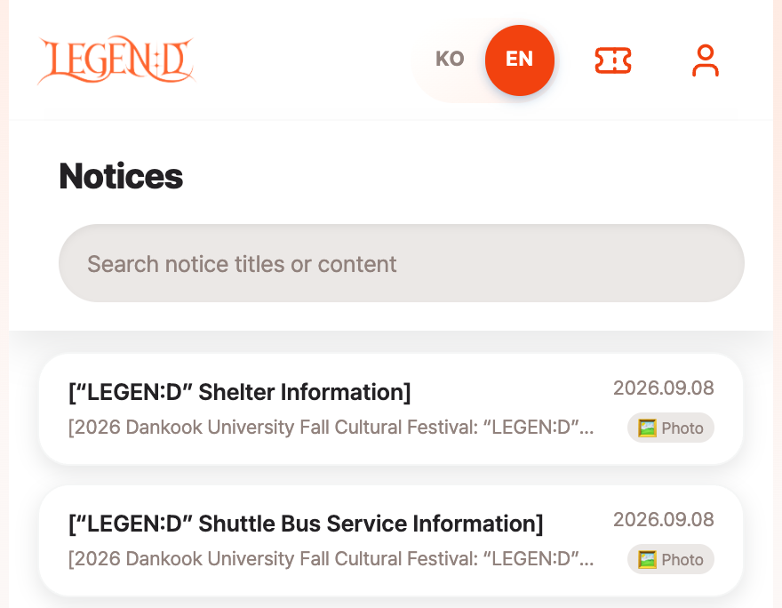
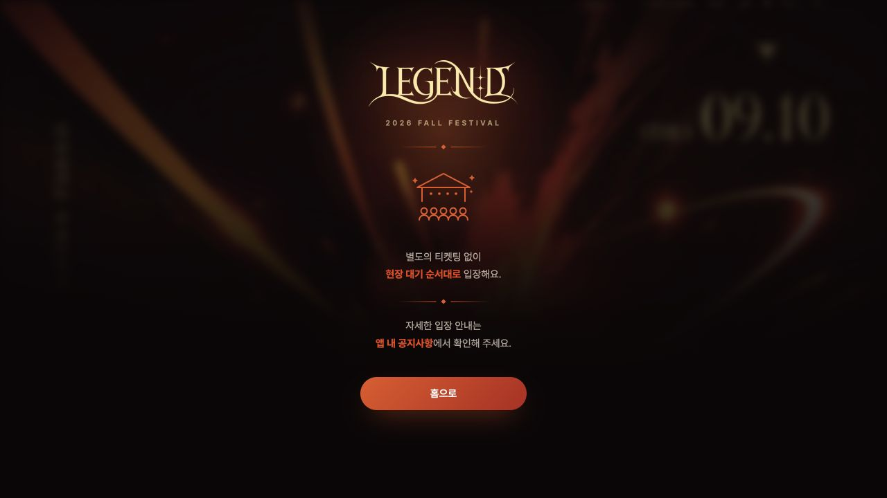

단짠 Danzzan
축제의 모든 순간을, 한곳에.


Overview
학생의 예매와 운영진의 입장을
하나의 흐름으로.
단짠은 여러 채널에 흩어진 대학 축제 정보와 예매, 현장 입장 업무를 연결한 웹 애플리케이션입니다. 학생은 필요한 정보와 티켓을 찾고, 운영진은 예매 내역을 확인하며 현장 업무를 진행할 수 있도록 구성했습니다.
총학생회와 요구사항을 조율하고, 네이버 Face Sign과 연계한 입장 운영에 참여했습니다. 실제 축제에서 6,000명 이상이 사용하고, 티켓팅 시 약 4,000명이 동시에 접속한 팀 서비스입니다.
My contribution
한꺼번에 몰리는 예매,
일관되게 처리하는 백엔드.
Redis 대기열로 진입 순서를 관리하고, Lua Script로 중복 발급 확인·재고 차감·발급 상태 기록을 원자적으로 처리했습니다. JWT 로그인·회원가입과 번역 기능도 개발했습니다. Kafka·DB 비동기 처리 부분은 팀원이 담당했습니다. 학생의 예매 요청과 운영진의 처리 흐름이 실제 축제 환경에서 동작하도록 백엔드 구현과 운영 개선에 참여했습니다.
이후 티켓팅 설정에 따른 API 차단, 비동기 예매 처리 상태와 빈 대기열 정보 처리, 입장 만료와 예매 오픈 오류의 구분 등을 개선했습니다. 운영 조건이 바뀌어도 사용자에게 현재 상태가 정확히 전달되도록 다듬은 작업입니다.
- 티켓팅
Redis·Lua 기반 선착순 예매 처리
- 인증
JWT 기반 학번 인증
- 상태 처리
대기열·비동기 처리·입장 만료 구분
- 운영 개선
티켓 설정, API 차단과 관리자 기능 보완
Collaboration
총학생회·네이버와 함께,
예매에서 입장까지.
총학생회와 협업해 축제 운영에 필요한 정보·예매 기능을 구현하고, 네이버 Face Sign을 활용하는 현장 입장 흐름을 연결했습니다.
단짠은 티켓 예매와 개인정보 제3자 제공 동의, 사전 등록 안내를 담당하고, 얼굴 정보 등록과 인증은 네이버 Face Sign에서 처리했습니다. 예매 완료와 얼굴 등록 완료가 서로 다른 단계라는 점을 사용자에게 안내했습니다.
서비스 운영과 외부 협업은 팀 공동 성과입니다. 개인 구현 범위는 Redis·Lua 예매 처리, JWT 인증, 번역 및 운영 상태 개선입니다.
Service in use
사용자 피드백을 다음 축제에 반영했습니다.
봄 축제에서 외국인 사용자가 한국어 중심 화면의 불편을 전했습니다. DeepL 번역 결과를 저장하고, 관리자가 문맥에 맞게 수정할 수 있도록 구성해 9월 가을 축제에 적용했습니다.


티켓팅을 운영하지 않는 기간에는 예매와 내 티켓을 안내 화면으로 전환하면서도 로그인·회원가입과 기존 발급 데이터를 유지하도록 FE·BE를 함께 개선했습니다.

Team outcome
실제 축제에서 사용한 서비스.
봄축제에서 티켓 3,500장이 매진됐으며, 가을축제에서도 서비스를 운영했습니다. 사용자의 예매와 운영진의 현장 업무가 맞물리는 환경에서 개발한 기능을 검증하고, 운영 경험을 다음 개선에 반영했습니다.
운영 규모는 팀 서비스 전체 성과이며, 부하 테스트의 가상 사용자 수와 구분합니다. 화면은 봄·가을 축제 운영과 후속 개선 과정의 팀 공동 산출물입니다.
Stack & evidence
React / TypeScript / Spring Boot / MySQL / Redis / Kafka / Docker / NHN Cloud